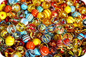
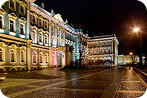
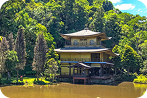

Detalhe
Nitidez em detalhes
minuciosos.
Carro
Foco nítido e contraste
acentuado.
Retrato
Tons de pele naturais
e desfoque suave.

Urbano
Contraste e nitidez
para cenas da cidade.

Paisagem
Cores vivas e equilíbrio
para natureza.
Adicionar novo